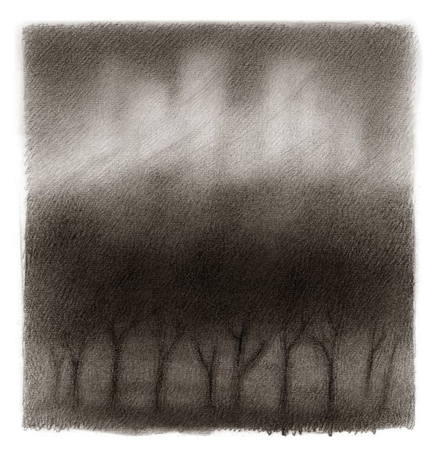
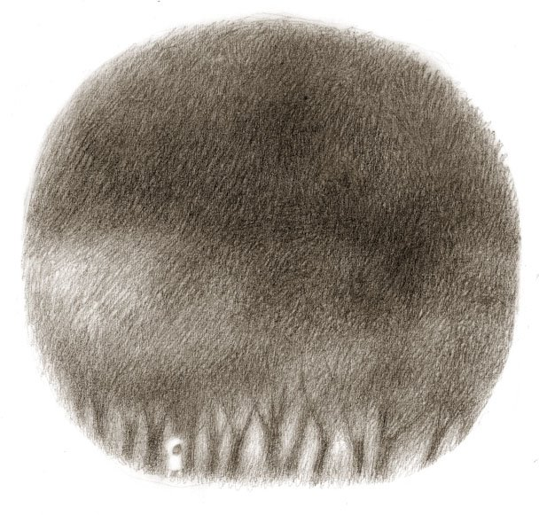

My name is John Duncan. I'm a software engineer based in New York City with 7+ years of industry experience. I have worked at
Quorum Analytics
since early 2018.
Previously, I was a research intern for the Humanitarian Assistance and Disaster Relief Systems group in the Homeland Protection (now Biotechnology and Human Systems) division at MIT Lincoln Laboratory in Lexington, Massachusetts.
I received a Bachelors of Science with honors in both Computer Science and Philosophy from Gettysburg College in Gettysburg, Pennsylvania.
github
twitter
linkedin
instagram
mastodon
keybase
cv (.tex)
ch'io faccio il canto della guerra eterna Fra luce a fango.
for I sing the song of the eternal war Between light and mud.
| — Ezra Pound, Canto LXXII | 1944 AD |
He stepped down, trying not to look long at her, as if she were the sun, yet he saw her, like the sun, even without looking.
| — Leo Tolstoy, Anna Karenina | 1877 AD |
Verum esse ipsum factum
What is true is precisely what is made
| — Giambatista Vico, De Antiquissima Italorum Sapientia ex Linguae Originibus eruenda Librir Tres | 1710 AD |
Et sic in infinitum
And so on to infinity...
| — Robert Fludd, Utriusque Cosmi | 1617 AD |
Mortui vivunt, vivi pro eis sepeliuntur
The dead are alive and the living are buried by them
| — Walter Map, De Nugis Curialium | ~1180 AD |
Omnia mutantur, nihil interit
Everything changes, nothing perishes
| — Ovid, Metamorphoses | 8 AD |
τοῦτο δ᾽ ἐστὶν ἀνάμνησις ἐκείνων ἅ ποτ᾽ εἶδεν ἡμῶν ἡ ψυχὴ συμπορευθεῖσα θεῷ
This is a recollection [anamnesis] of those things which our soul once beheld, when it journeyed with God...
| — Plato, Phaedrus (249c) | ~370 BC |
τὸ γὰρ ζητεῖν ἄρα καὶ τὸ μανθάνειν ἀνάμνησις ὅλον ἐστίν
(For searching and learning are, as a whole, recollection [anamnesis]
)
| — Plato, Meno (81d) | ~385 BC |
ἀκούοντί ποι χθονίᾳ φρενί
Deep in the earth, their heart listens
| — Pindar, Pythian V | 462 BC |
𒃻 𒌑𒄖 𒌣𒀀 𒃻𒈨𒃻𒊏
níg ú-gu dé-a níg-me-gar-ra
It is inconceivable that something is lost forever
| — The Instructions of Shuruppak | ~2600 BC |
Quorum

I spent over six years building Quorum Analytics. During my tenure, I researched, designed, built, and maintained many of Quorum's flagship products, features, and critical systems.
MIT Lincoln Laboratory

I interned with the Humanitarian Assistance and Disaster Relief Systems group (Division 4 Group 44) on the Local Evacuation Alert Verification (LEAV) program for HURREVAC-eXtended (HVX).
Upspin
I am currently working on project using Go, Mozilla, Svelte and the upspin protocol.